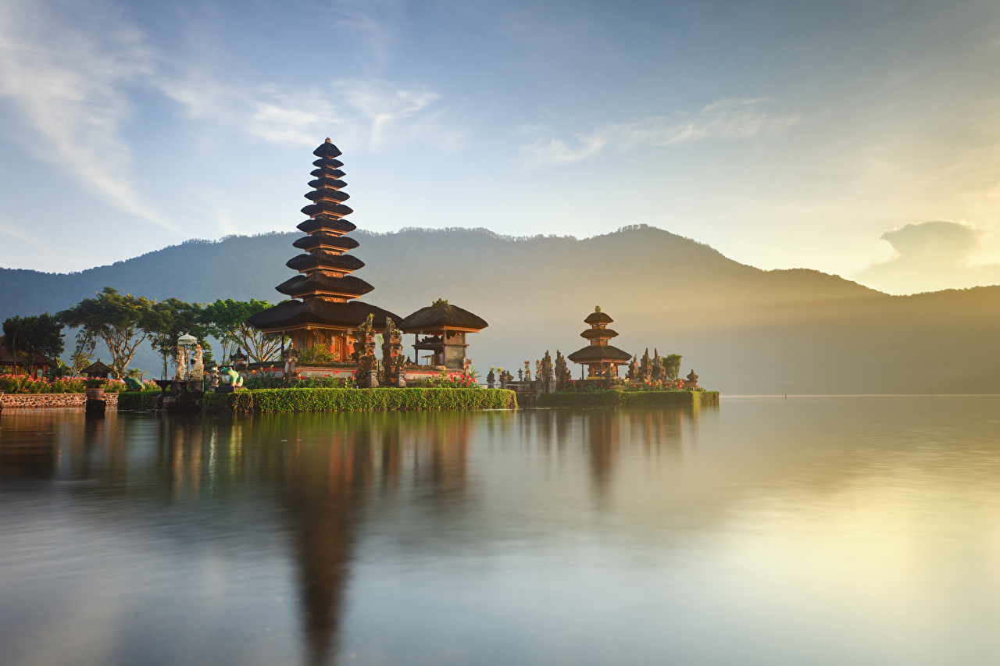
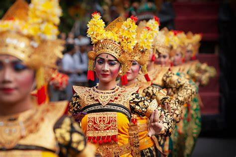
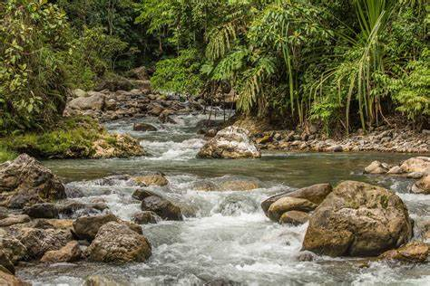
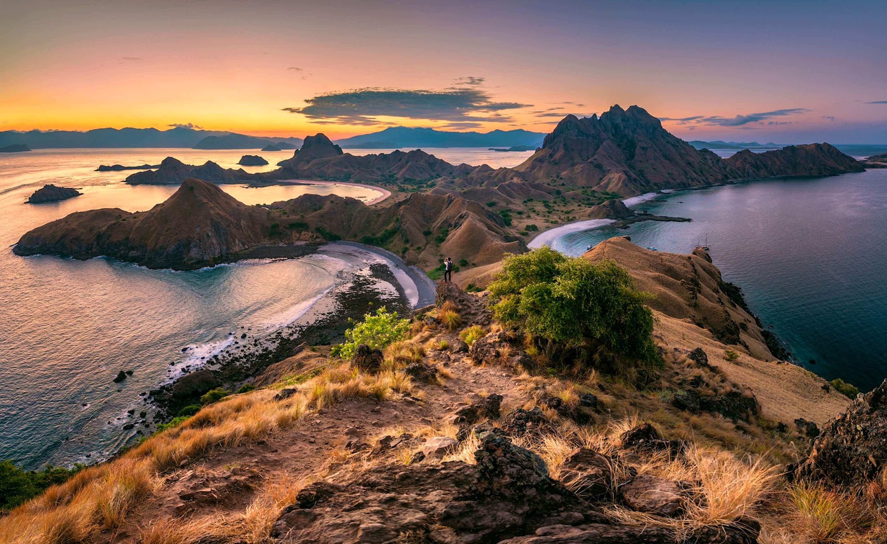
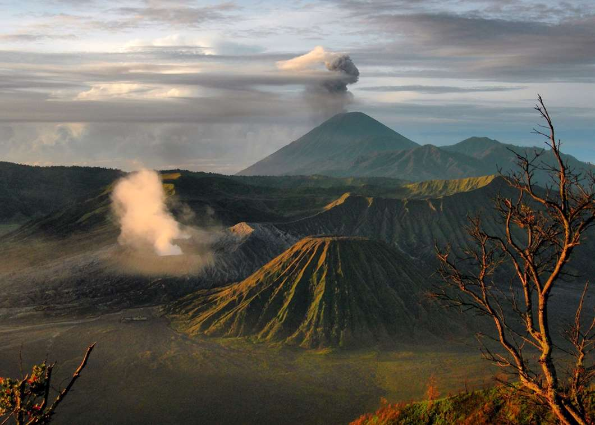
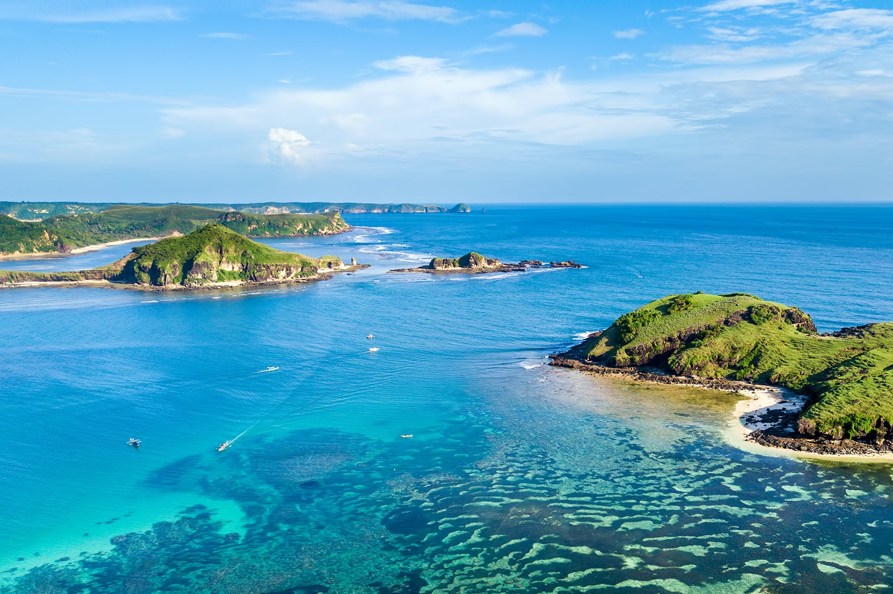
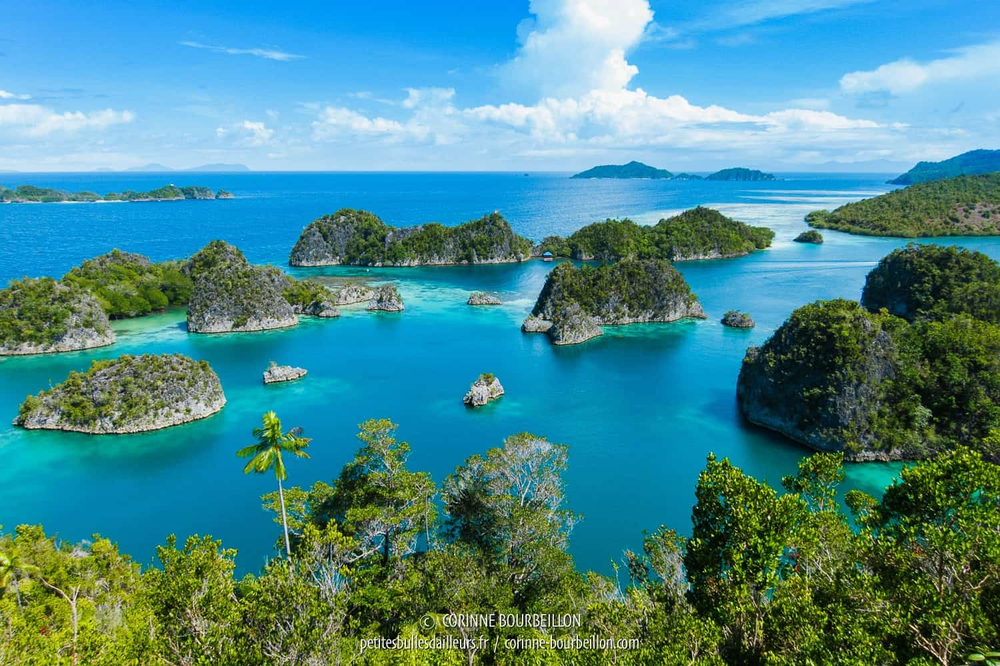
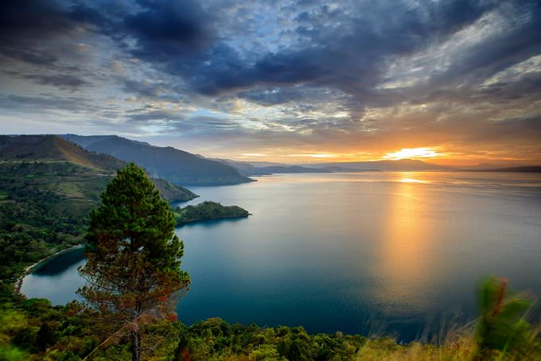
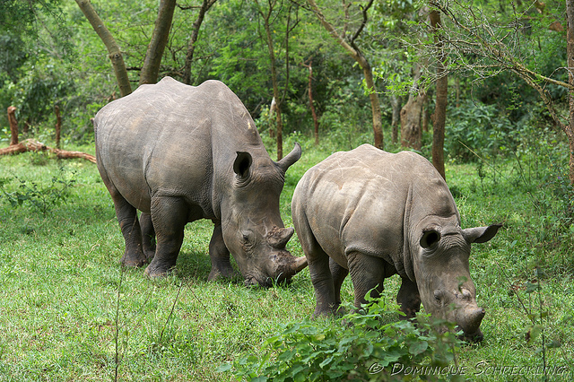

Top 10 Attrazioni in Indonesia

La TOP 10 delle migliori cose da vedere in Indonesia. Imperdibile in Indonesia: cosa fare, cosa vedere, cosa visitare?
Stai cercando di organizzare un viaggio in Indonesia? Vuoi sapere quali sono le attrazioni più belle dell’Indonesia?
L’Indonesia e le sue isole tropicali formano un piccolo paradiso terrestre.
Ogni isola contiene meraviglie che sicuramente ti stupiranno.
Spiagge tropicali, antichi vulcani, templi dall’architettura insolita e molte altre attrazioni ti aspettano nell’arcipelago.
La nostra TOP 10 comprende quindi tutte le attività essenziali: i luoghi più interessanti, le spiagge paradisiache, location
remote e sensazionali, attrazioni e attività turistiche.
Immergiti nella cultura balinese
Fai un trekking nella giungla di Gungung Leuser

Scoprirai paesaggi sublimi che spaziano dalle risaie, ai vulcani,
passando per i fondali marini di Menjangan,
ma Bali è soprattutto una cultura di infinita ricchezza, una popolazione gentile e generosa,
che riesce
meravigliosamente a preservare le sue tradizioni nonostante la folla di turisti che invadono il sud dell’isola ad agosto.

Gunung Leuser è una piccola meraviglia ancora poco conosciuta dai turisti. Conservata e rispettata, questa riserva naturale
patrimonio dell’umanità UNESCO copre 9500 chilometri quadrati di giungla lussureggiante. Il Parco Nazionale di Gunung Leuser
è una delle aree protette più importanti e biologicamente diverse al mondo, è spesso descritto come un laboratorio ecosistemico
completo a causa della varietà di tipi di foresta e specie. All’interno dei confini del parco vivono alcune delle specie più
esotiche e minacciate del pianeta: tigri, rinoceronti, elefanti e oranghi. Sebbene la probabilità di vedere la maggior parte
di questi animali “famosi” sia remota, hai buone possibilità di vedere gli oranghi e puoi essere certo di incontrare molti
altri primati mentre sei circondato dalla più alta biodiversità al mondo.
Esplora il Parco Nazionale di Komodo e Flores
Ammira l’alba sul Monte Bromo

Nominate tra Le 7 nuove più grandi meraviglie del mondo, le isole di Komodo e Rinca ospitano uno dei grandi misteri dell’era animale:
i draghi di Komodo. Queste lucertole giganti lunghe tre metri sono in grado di divorare bufali e cervi e correre a oltre 40km all’ora!
Direttamente da Jurassic Park, non sono la semplice attrazione poiché l’isola è immersa in un arcipelago di acque turchesi brulicanti
di mante e squali… per la gioia dei subacquei in crociera in questo angolo di mondo perduto.

È davvero necessario presentare questa location? Un classico itinerario turistico per i viaggiatori in Indonesia,
il Monte Bromo emana, nonostante la prova del tempo, una potenza notevole e infinitamente suggestiva. La famosa alba
in mezzo alla caldera è un’esperienza da non perdere in nessun caso. Non lontano da lì c’è anche il Kawa Ijen, un vulcano
rinomato per il suo lago turchese sulfureo e per i suoi portatori di zolfo. Poi, attraversare la parte orientale di Giava,
scoprendo il monto Bromo, fino ad arrivare a Bali…è un itinerario senza tempo e sempre unico!
Le Sulawesi e i riti funebri del paese di Toraja
Apprezza la cultura giavanese a Jogjakarta
e contempla i templi di Borobudur e Prambanan

Una regione situata nel cuore delle Sulawesi, Tana Toraja sta gradualmente diventando una destinazione alla moda in Indonesia
per un motivo specifico! Qui, niente spiagge paradisiache o giungla piena di elefanti. Il paese della Toraja si distingue per
il suo culto della morte! Un po’ brutale detto così, ma le cerimonie che riuniscono migliaia di abitanti del villaggio per
celebrare la morte di un defunto sono assolutamente incredibili e completamente fuori dall’ordinario. Riti, usanze e credenza
che ci portano indietro nel passato di migliaia di anni. Tutto ciò potrebbe risultare macabro e spaventoso…ma senza alcun
dubbio incredibilmente affascinante!

Yogyakarta, o Jogjakarta, dipende da te, è conosciuta come un centro dell’arte classica giavanese e della cultura tradizionalelocale.
Yogyakarta è nota anche per i suoi lavori di oreficeria, soprattutto argenteria, ma anche per i balletti, il teatro, la musica e la
poesia. A pochi chilometri da Jogja, ci sono due dei più antichitempli indonesiani, conosciuti in tutto il mondo: Prambanan e Borobudur.
Prambanan è un insieme di 240 templi shivaiti, costruiti nel IX secolo. Un’iscrizione datata 856 segna quella che potrebbe essere la sua
prima pietra. Il tempio è classificato come patrimonio mondiale dell’umanità. Borobudur è il più grande monumento buddista del mondo. Fu
costruito intorno all’800, come santuario dedicato al Buddha ma è anche luogo di pellegrinaggio buddista.
Scopri l’Indonesia tradizionale a Lombok
e visita gli antichi templi Indù
Naviga tra le incantevoli isole dell’arcipelago di Raja Ampat

A 35 km da Bali vi attende l’isola di Lombok, abitata dal popolo dei Sasak. Questa meravigliosa isola è considerevolmente differente dalla vicina e induista Bali.
I turisti qui sono pochi e chi la sceglie cerca i panorami da cartolina e le spiagge incontaminate, non la movida. La maggior parte dei visitatori che vi giungono
preferiscono pernottare nei villaggi di Senaru e Sembulan Lawang, oppure, a Tetebatu e Sapit situati alle pendici del vulcano Rinjani.

Quello di Raja Ampat è un arcipelago costituito da più di 600 atolli situati nella parte piùoccidentale della Papua occidentale.
Anticamente il dominio sulle quattro isole principali spettava a quattro sultani, da cui il nome raja ampat, che nella lingua locale
significa per l’appunto: quattro Re. Le isole di Misool, Salawati, Batanta e Waigeo costituiscono a loro volta un importante parco
marino, il Cenderawasih Bay, che si estende per oltre 40mila chilometri quadrati.
Riposa sulla riva del lago Toba
Esplora la spiaggia di fronte a Krakatau e osserva il rinoceronte unicorno di Ujung Kulon

Lago Toba, situato nel nord di Sumatra, queste sono in primo luogo figure piuttosto spaventose: il più grande lago vulcanico del
mondo, una profondità di 500 metri in alcuni punti e un’isola interna delle dimensioni da Singapore. Il paesaggio è sublime,
l’azzurro dell’acqua è incredibilmente profondo e c’è una calma e una serenità in grado di conciliare ogni anima del mondo.
A questo si aggiunge la cultura Batak, un popolo cannibale…ma nel tempo libero. I Batak sono assolutamente sorprendenti,
testimoniati anche dalle tombe grandi come case che coprono l’isola di Samosir.

Situato all’estremità nord-occidentale di Giava, il Krakatau e il Parco Naturale di Ujung Kulon sono ancora poco frequentati dai viaggiatori.
Il vulcano più famoso al mondo per aver immerso il sud-est asiatico nell’oscurità e aver provocato onde fino all’Europa, il Karakatau è ancora
attivo e talvolta lascia fuoriuscire alcune colate laviche…
Un’altra curiosità, Ujung Kulon è un parco naturale iper protetto, che contiene l’unica specie di rinoceronte unicorno al mondo ma che rimane
estremamente difficile da vedere. Il parco è magnifico, circondato, come se non bastasse, da spiagge paradisiache.
Lo sapevi che...?
In Indonesia esiste un ponte fatto di radici. Questo ponte è situato nel fiume Batang Bayang nel West Sumatra, la sua lunghezza è di circa 25 metri e collega due villaggi. Ci sono voluti ben 26 anni per creare questa struttura così solida.
Lo sapevi che...?
In Indonesia esiste un popolo chiamato Toraja considerato il popolo senza morte. Ogni anno i Toraja riesumano i morti e li preparano per un rituale alquanto macabro. Nei giorni che precedono la manifestazione, i parenti dei defunti sistemano i cadaveri pulendoli e pettinandoli e fanno indossare loro abiti nuovi ed ogni volta vengono sepolti con accessori nuovi e differenti.
Lo sapevi che...?
La cucina indonesiana è rinomata per la sua varietà di sapori e spezie aromatiche. Il nasi goreng, è un delizioso riso fritto con verdure e carne. Provare la cucina indonesiana è un’esperienza culinaria da non perdere durante una visita in Indonesia.
Lo sapevi che...?
L’Indonesia è composta da oltre 17.000 isole, la più grande di tutte è l’isola di Giava. Questa isola densamente popolata è anche la casa della capitale, Jakarta. Giava è famosa per i suoi templi antichi, come il Borobudur e il Prambanan, che sono patrimoni mondiali dell’UNESCO. Ci sono ancora molte isole incontaminate da esplorare, con spiagge paradisiache e una ricca biodiversità.